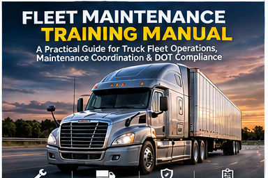

THE FLEET MAINTENANCE FIELD GUIDE
Know the truck.
Own the process.
Your practical guide to US trucking and fleet maintenance. From the parts under the hood to the decisions that keep a fleet moving.
✓ Free to explore✓ No account needed✓ Learn at your pace

BUILT FOR THE PEOPLE
BEHIND THE FLEET.✳
BEHIND THE FLEET.✳
THE ROAD STARTS WITH UNDERSTANDING
Real equipment.
Real-world knowledge.
08Core training modules
18Practical lessons
51Essential trucking terms
A manual, not a maze.
Built for everyday reference.
Built for everyday reference.
YOUR KNOWLEDGE TOOLKIT
A stronger foundation.
A more confident coordinator.
Start from the beginning or jump into the topic
you need. Everything is connected.
No matching topics. Try “tires”, “PM”, or “brakes”.
NEW TO FLEET MAINTENANCE?
Start with the rig.
Build your confidence.
A simple path from recognizing equipment to coordinating your first road call.
Begin your learning journey →SPEAK THE LANGUAGEFrom ABS to WO.
From ABS to WO.
Make every term click.
Plain-English definitions for the language you’ll hear in the shop, on the radio, and across the fleet.
Explore the glossary →TERM OF THE MANUAL
Preventive maintenance PM
Planned maintenance that helps keep equipment reliable. Service levels and schedules are defined by the fleet and manufacturer.
Explore planning & costs →